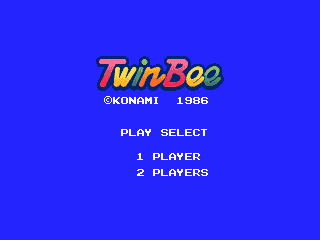
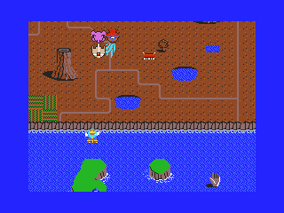
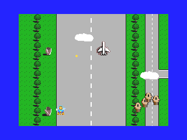

Twin Bee Enhanced (MSX2) — pixel scroll, SCC music and Guantxip's graphics
(También disponible en castellano.)
An unofficial patch that turns Twin Bee (Konami, 1986), the 32 KB MSX cartridge, into an enhanced version for MSX2: the scenery scrolls a pixel at a time on a bitmap screen, the five stages and their five bosses wear new graphics adapted by Guantxip, the sprites show three colours per line, and the music plays on the SCC, the way the Konami Game Collection version sounds.
The website: https://antxiko.github.io/TwinBee-Enhanced-MSX2-Patch/ · Download the patch: ips/twinbee_enhanced_msx2.ips
140,977-byte IPS · 5 stages and 5 bosses redrawn · 256 KB MegaROM with SCC · no ROM distributed
| the patch | ips/twinbee_enhanced_msx2.ips, 140,977 bytes |
| input | your Twin Bee dump, 32,768 bytes, sha256 02bdce8ceafe6af05a45b61a689e78807551df663afd152090f7cd9cac827dd4 |
| output | a 256 KB MegaROM, Konami SCC mapper, sha256 a36c3fffc02a080bb341ed1fded4609107cc32d71db6a0875b95f0e551d40551 |
| needs | an MSX2 with 128 KB of VRAM and the SCC (a flash cartridge with SCC, such as a MegaFlashROM SCC+ or a Carnivore2) |
| tested | in openMSX, with C-BIOS and with a Sony HB-F900: the whole game, the five stages and their bosses; not yet on real hardware |
In pictures









What changes
- The scenery is a Screen 5 bitmap that the VDP scrolls one line at a time (register 23), instead of the MSX1 tile scroll. The five stage maps are Guantxip's.
- The sprites: ships, enemies, bells, clouds and bosses are Guantxip's drawings, with two sprites laid on top of each other so that each line can show three colours. TwinBee and WinBee are the same in every stage.
- The five bosses have their new drawings, with their own colours while they are on screen.
- The music is the SCC version from the Konami Game Collection Vol. 3, inside the cartridge itself.
- The presentation: an intro, the new title logo and the Konami logo of the later games, with its double wave, appearing as it does in Salamander.
- The credits at the end of the game add the graphics.
- The pause (F1) shows the scoreboard in a black box: stage, high score, score and lives left.
- When more than eight sprites share a line they take turns flickering instead of vanishing, and the two halves of each three-colour sprite are never split.
Applying it
With any IPS tool (Lunar IPS, Floating IPS, RomPatcher.js) on your own dump, or straight from openMSX, which applies IPS patches when it loads the cartridge:
openmsx -machine C-BIOS_MSX2 -cart twinbee.rom -ips twinbee_enhanced_msx2.ips -romtype KonamiSCCOr with Python, which checks the result:
python3 tools/ips.py aplica twinbee.rom ips/twinbee_enhanced_msx2.ips twinbee_enhanced.romThe patched ROM is a Konami SCC MegaROM: on a flash cartridge, pick that mapper if the loader asks for it.
Known limitations
- With the boss on screen the game sometimes drops below 30 frames per second: the SCC music driver costs much more than the original PSG player.
- In the busiest moments a few sprites flicker or briefly show fewer colours.
- The items left on the ground (the weapon, the star that clears the screen and the extra life) show the drawing of the stage's ground enemy.
- Changing stage blanks the screen for half a second while the new graphics are loaded.
- The two-player game has not been tested.
Credits
- Graphics: Guantxip.
- Port and programming: Antxiko (Compila!).
- Testing: Araubi.
- The original game and its music: Konami.
Notice
Unofficial and free. Neither the original ROM nor the patched one is distributed. Read the legal notice before sharing the patch: besides the new code and graphics, it carries the SCC music driver of the Konami Game Collection Vol. 3.